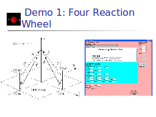

Click here to start
Table of contents
History of jat.attitude
How I started…
Daniel Quock- my predecessor
First Point of Contact
What I have done…
Added more scenarios
Developed Simulation Applet
Made the applet accessible
Derived Flexible SC EOMs
Flexible SC Model Used
Incorporation of Flexibility
3D Visualization for Flexible SC
3D Flex SC Inner Workings
Demo 1: Four Reaction Wheel
Four Reaction Wheels in action -1
Four Reaction Wheels in action-2
Demo 2: Three CMGs
Demo 2: Bang Bang Control
Demo 3- Flexible SC
Flexible SC in action-1
Flexible SC in action -2
Flexible SC in action- 3
Author:
Noriko Takada
